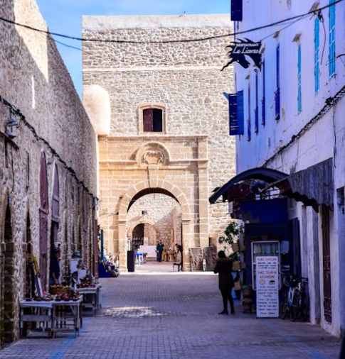
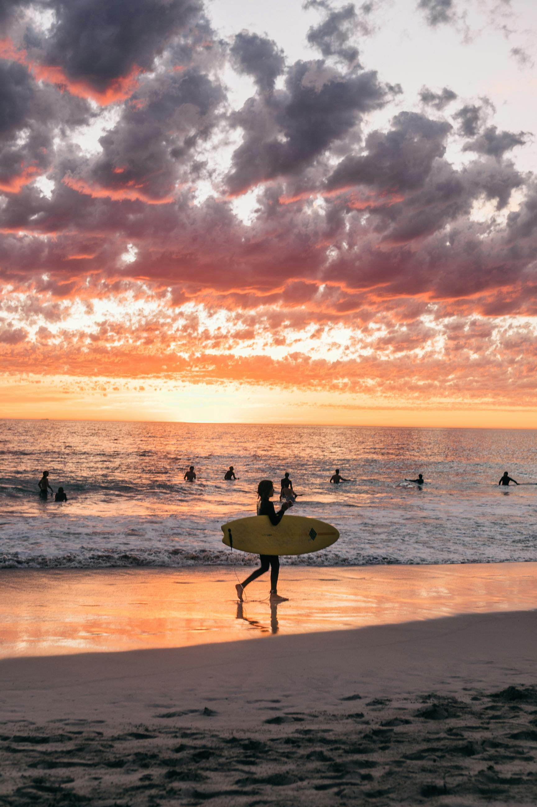
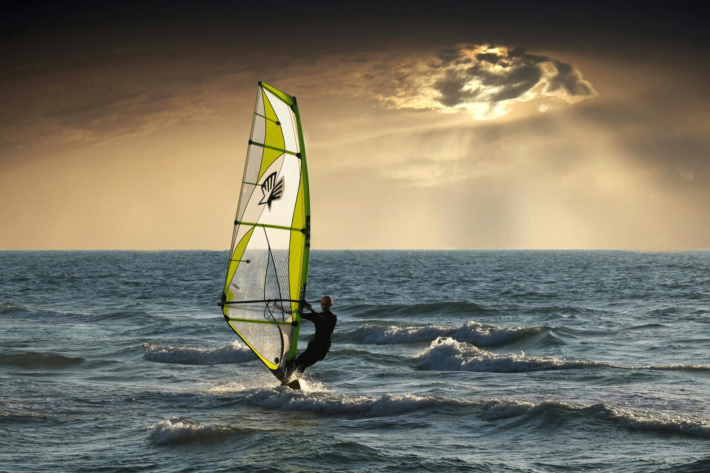
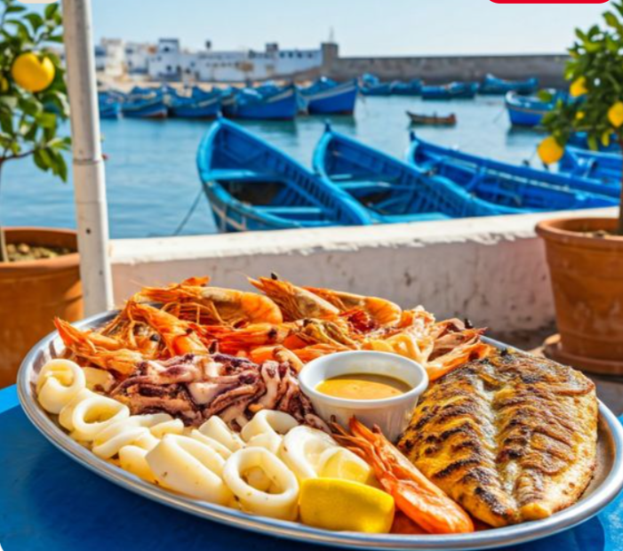

Activités touristiques
Des remparts portugais aux plages de kitesurf, Essaouira offre une magie unique entre mer, vent et culture.

CultureMédina UNESCO
La médina d'Essaouira, classée au patrimoine mondial de l'UNESCO en 2001, est un labyrinthe de ruelles blanches et bleues d'une beauté saisissante.
 Culture
Culture
Remparts & Skala
Les remparts du XVIIIe siècle construits par le sultan Mohammed III offrent une vue imprenable sur l'océan Atlantique et les îles Purpuraires.

Nature & MerPlage d'Essaouira
Une plage de sable doré s'étendant sur 10 km, balayée par les alizés, avec en toile de fond les dunes et l'Atlantique à perte de vue.

SportKitesurf & Windsurf
Capitale mondiale du kitesurf, Essaouira attire les riders du monde entier grâce à ses alizés constants. Cours et location disponibles sur la plage.
 Artisanat
Artisanat
Souks & Artisanat
Essaouira est réputée pour ses artisans du thuya, ses galeries d'art et sa scène musicale gnawa. Les souks regorgent de bijoux berbères et d'objets uniques.

GastronomiePort & Grillades de Poissons
Le port bleu d'Essaouira et ses grillades de poissons frais sont une institution. Sardines, crevettes et calamars grillés à la minute face aux bateaux de pêche.
 Culture
Culture
Festival Gnaoua
Le Festival Gnaoua et Musiques du Monde est l'un des plus grands festivals de musique d'Afrique. Chaque juin, Essaouira vibre au rythme des maâlems gnawa et des artistes internationaux.
 Sport
Sport
Balade à Cheval
Galoper au bord de l'Atlantique sur la plage d'Essaouira est une expérience inoubliable. Des balades guidées à cheval sont proposées au coucher du soleil sur 10 km de sable doré.